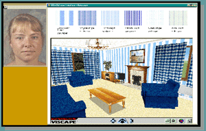

Description of the System
At the start of the programme it was very important to choose a suitable application environment. The application chosen was an existing 3D retail system (internal to BT), whose visual nature provided ample scope for multimodal interaction, and whose database and functionality were rich enough to provide a decent challenge to the language component, without creating too large a vocabulary for the recogniser. It also gave the opportunity to investigate the combination of speech input with a virtual world interface.
The 3D retail system is intended to be deployed either as an Internet service, or as an in-store kiosk application. To the original mouse-driven system we added a touchscreen to allow touch input, advanced spoken language capabilities, a synthetic persona (talking head) to act as a virtual assistant, extra functionality and some system intelligence. In fact, the primary interaction metaphor has been changed from controlling a screen to conversing with the Virtual Assistant. See below (figure 5) for a screen shot of the multimodal system interface, with its 2D fabric palette, 3D virtual world (VW) and virtual assistant. The palette and VW are touch-sensitive, and there is also a speech-in/speech-out channel, which is not shown.

Fig 5. The user interface
Fabrics may be selected according to a wide range of criteria, and placed on furniture, curtains and walls in the virtual living room or displayed on the palette. Users can refer to objects in the virtual room and to fabrics on the palette by speech or touch, and talk about them with the assistant. Users can combine speech and touch inputs in a single dialogue turn. They can ask for prices of fabrics or complete selections, for cheaper fabrics, etc. They can ask for advice on which fabrics would suit with a given fabric. They can move around the room and inspect the contents from different distances and angles. They can move furniture within the room. A natural dialogue is possible with the assistant, catering for various forms of reference and ellipsis. The assistant is able to take the initiative at certain points in the dialogue, currently to offer fabric matching advice and to suggest movements within the VW.
A snippet of typical dialogue will give the flavour:
User: Show me some plain green fabrics in linen.
System: There are more than ten fabrics. Here is a selection. [displays 6 fabrics on palette].
User: Put this one on the curtains [points to Plain Slub Velvet fabric].
System: Plain Slub Velvet is not a drapes fabric.
User: Put it on the sofa (anaphor).
System: [transfers Plain Slub Velvet to the sofa]. (pause)
System: Would you like to view the room from the door? (system initiative)
User: Move this chair over here [points to chair and position in turn]. (user ignores system)
System: [moves chair to new position].
User: How much is this selection?
System: This design costs three thousand, five hundred and fifty pounds.
User: What cheaper upholstery fabrics do you have?
System: Here is a selection of cheaper upholstery fabrics.
Here are examples
of typical interactions of a user with the system:
|
||||||||||||||||
|
|
||||||||||||||||

Example 1. Starting off a session
|
||||||||||||||||
|
|
||||||||||||||||
Example 2. Using two modalities
|
||||||||||||||||
|
|
||||||||||||||||

Example 3. The system make suggestions too
|
||||||||||||||||
|
|
||||||||||||||||
Example 4. Movement around the virtual world
|
||||||||||||||||
|
|
||||||||||||||||
Example 5. Rearranging furniture
© Copyright British Telecommunications plc 1999